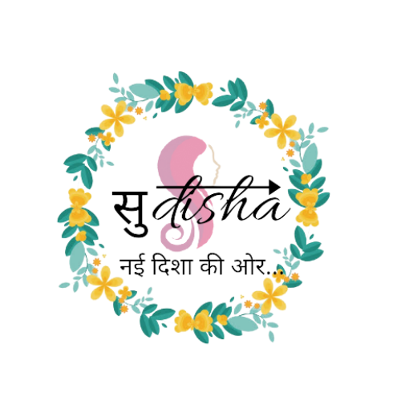

Works to Educate and Rise Awareness on Menstrual Hygiene
;Charity is one of the most noble tasks that a person can do in his life. At the end of life, we will not be judged by how
much money we have made, how many great things we have done. We will be judged by how we helped others and
what we have done for the society. - Nisha Jaiswal
• I firmly believe that beauty is not who you are on the outside but is the wisdom and time you gave away to save
another struggling soul. - Snehal Pandey
• I believe in a saying that "Give whatever you can and what you have only then life could become meaningful to live“ –
Mohit Dwivedi
• I have adopted the thought for charity from my father. It’s not important how much rich you are, a small gesture from
your end may become a reason for someone’s smile. - Anee Dwivedi
• You will get un-accountable reasons to contribute if you really wish to contribute. - Sunita Jaiswal
• Sanitary pads distribution
• Cloth Distribution
• Food Distribution


Sudisha Foundation
14/1480 Gangotri Colony, Behind Shilpi
Kunj Rewa – India
Contact – 7225867433 (Nisha Jaiswal)
9589795947 (Mohit Dwivedi)